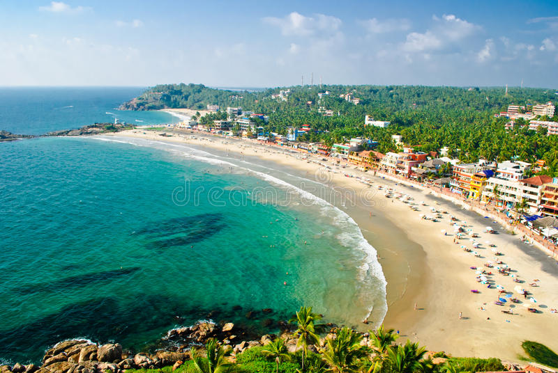

Kovalam Beach
Kovalam is a famed beach with an endless expanse of sugar white sandy shore and sparkling cerulean waters. A mountain cliff overlooks the beach that is extremely beautiful. Kovalam beach is situated just 12 km far from the capital city of Kerala, Thiruvananthapuram.

Cherai Beach
Cherai is a small beautiful region in the Vypin Island. Cherai is historically important being the birthplace of two important political leaders of Kerala. The longest beach in Kochi is situated in Cherai. This shallow, calm 10 km beach is called the ‘The Princess of Arabian Sea’.